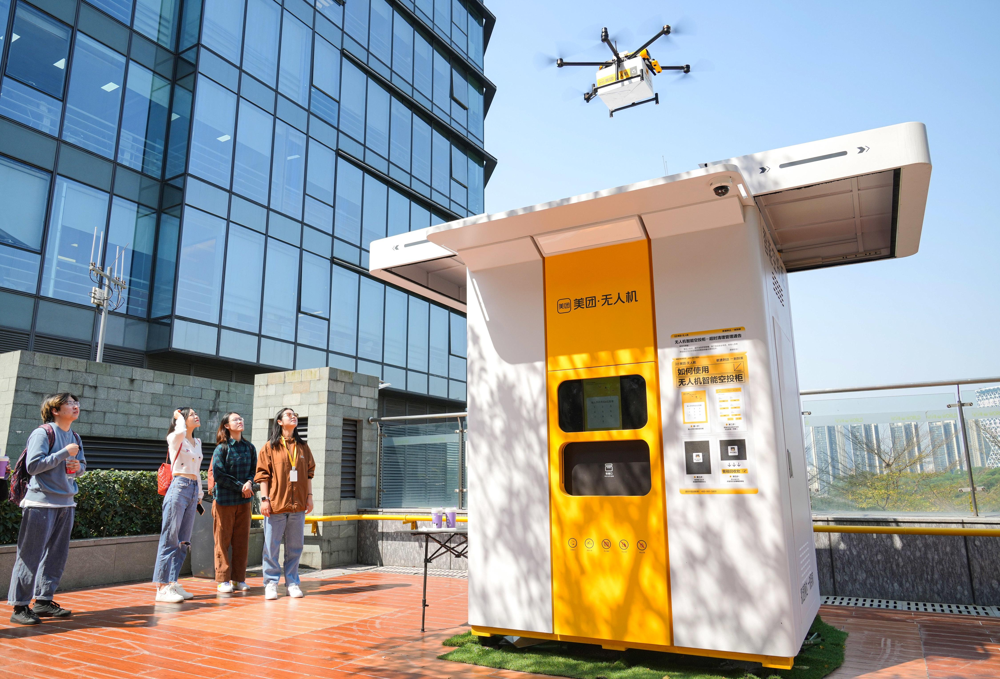
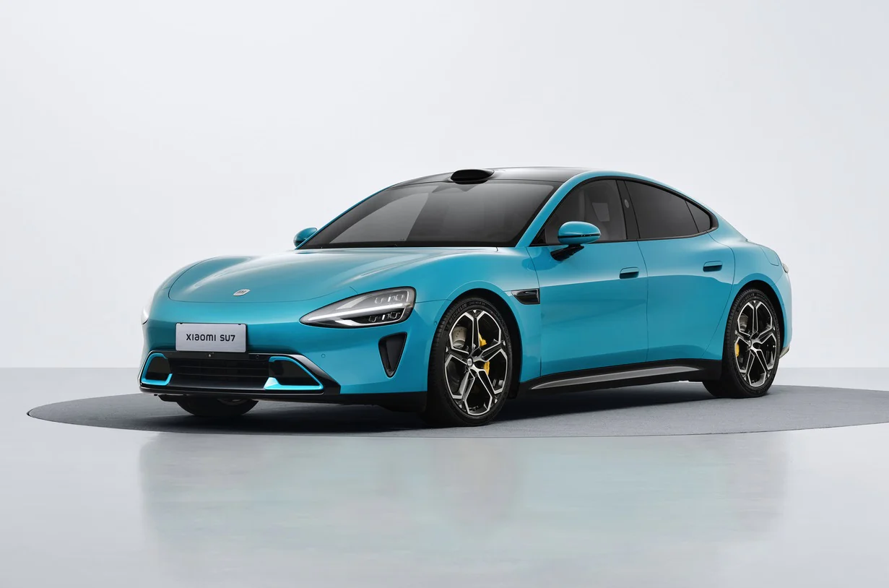
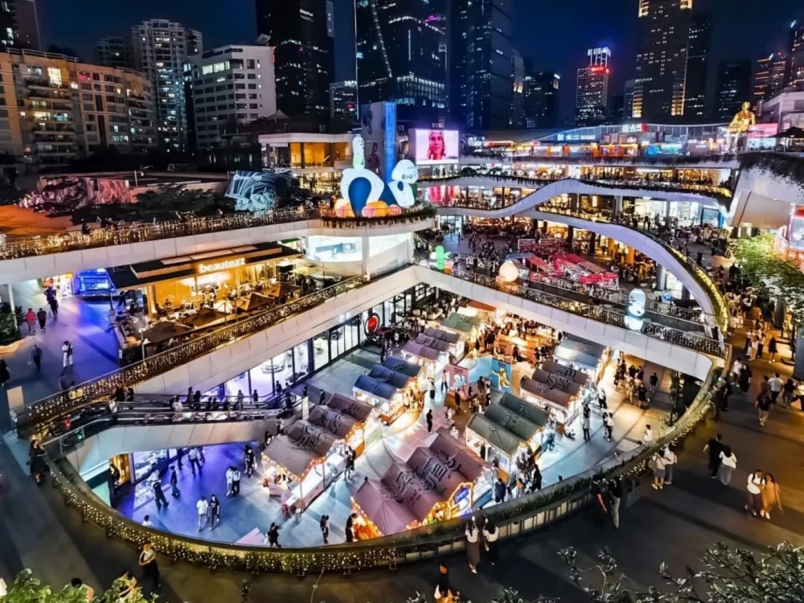
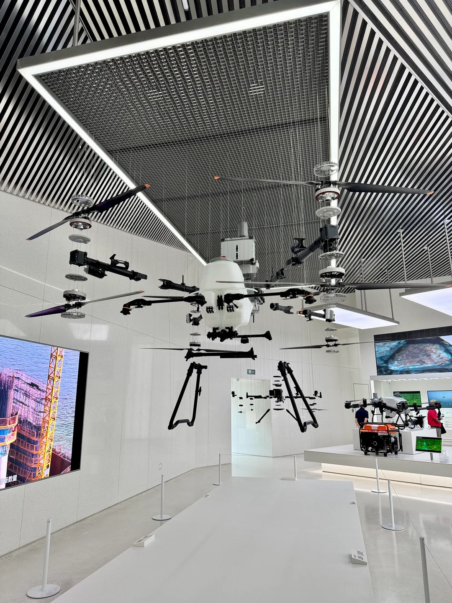
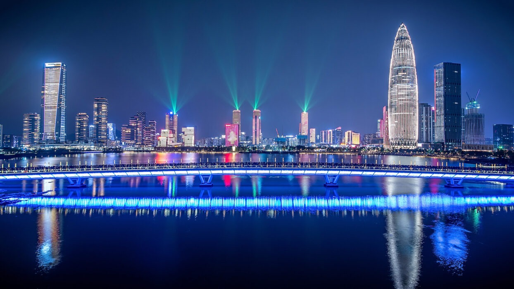
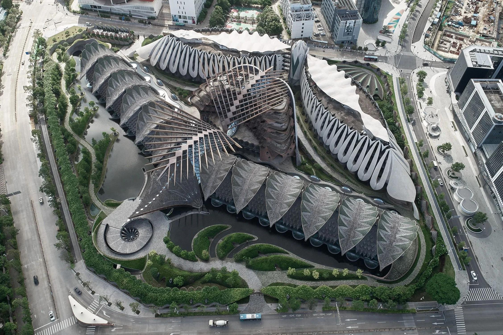

Drone Food Delivery

Order lunch and watch a Meituan drone drop it off at a pickup kiosk minutes later. Shenzhen runs the largest commercial drone delivery network in the world.

A visual tour of what makes Shenzhen feel like a city from the future with drones overhead, EVs in every lane, malls that across city blocks, and architecture that looks impossible until you stand under it.

Order lunch and watch a Meituan drone drop it off at a pickup kiosk minutes later. Shenzhen runs the largest commercial drone delivery network in the world.

Look around any Shenzhen street and you'll see more EVs than gas cars. The newest premium luxury sedan is the Xiaomi SU7, a high tech electric car from a popular smartphone company.

Malls here aren't just for shopping as they're the entire city blocks themselves, stacking everything from local Chinese brands to every international luxury brand under one roof, plus restaurants, cinemas, and ice rinks.

DJI is headquartered in Shenzhen, and their flagship store showcases their lineup of drones and cameras hanging from the ceiling like a fleet on display. A tech enthusiast's must see location to see why DJI is the world's leading drone company.

Once the sun goes down, Shenzhen turns into a light show. The city's buildings put on a light show across the bay, the Ping An tower glows above everything else as the whole skyline reflects on the water.

The Marisfrolg headquarters looks more like a creature than a building with the overlapping shells, sweeping curves, and folded forms that come from the designs of a sci-fi film. A pure example of the wild architecture Shenzhen is becoming famous for.